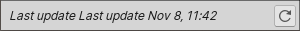
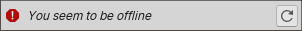
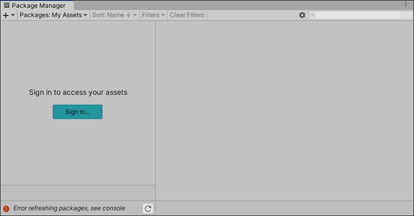

Package Manager 窗口
使用 Unity Package Manager（在 Unity 顶部菜单中：Window > Package Manager）可查看哪些包可供安装或已经安装在项目中。此外，还可使用此窗口查看哪些版本可用以及为每个项目安装、移除、禁用或更新包。
Package Manager 窗口显示以下内容：
(A) 预览包指示器，当您的项目包含预览包时显示的警告。默认情况下，Package Manager 在列表中不显示预览包。但是，您可以打开 Enable Preview Packages 项目设置以在列表中包含预览包。
(B) 添加  按钮，单击此按钮即可通过输入 git URL 或本地路径直接安装包到您的项目中。
按钮，单击此按钮即可通过输入 git URL 或本地路径直接安装包到您的项目中。
(C) Packages 下拉菜单，可用于更改列表（上下文）中的显示内容。
(D) Sort 下拉菜单，可让您按名称或日期对包列表进行排序。
对于 Asset Store 资源包，两个额外的控件为您提供了一些额外的过滤选项：
(E) Advanced settings，您可以使用它来访问 Package Manager 的项目设置或将项目的包重置为默认值。
(F) 搜索框，可用于按名称查找包。
(G) 包列表视图，显示与您指定的筛选条件和搜索参数匹配的所有包。
(H) 特定于包的详细信息视图，显示特定于列表中所选包的信息。
(I) 状态栏，当 Package Manager 加载包时显示信息。这包括错误和警告消息、可用的 Asset Store 资源包数量以及加载更多 Asset Store 资源包的链接。
(J) 重新加载 下拉菜单，可让您强制 Package Manager 重新加载或解析项目中的包。
(K) 用于安装或更新包的按钮（如果所选版本已经安装，则显示 Up to date 消息。）
Advanced 设置
高级设置 下拉菜单允许您执行以下操作：
| 下拉菜单项 | 操作结果 |
|---|---|
| 高级项目设置 | 选择此项打开 Package Manager 项目设置，您可以在其中： - 添加、编辑和删除您项目中的范围注册表。 - 浏览 Unity 注册表时显示预览包。 - 查看哪些包作为另一个已安装包的依赖项安装（间接依赖项）。 |
| Reset Packages to defaults | 选择此选项可恢复为 Package Manager 的默认设置。 警告：这将从项目清单文件中删除所有自定义项。仅当无法确定项目清单文件出了什么问题时，才应使用此选项作为最后的手段。 |
状态栏
Package Manager 在 Package Manager 窗口左下角的状态栏中显示消息。
通常，您可能会看到四种状态消息：
-
首次在新项目中打开 Package Manager 窗口时，将短暂显示 Loading packages 消息：
表示正在加载包的消息 在单击重新加载 按钮时也会显示此消息。
*当您使用 My Assets上下文时，加载栏将出现在日期上方。它显示 Asset Store 资源包的数量和用于加载更多包的数字链接：

-
大多数情况下，状态栏会显示 Package Manager 窗口上次更新其信息的日期和时间：
 表示上次更新的消息 -
但是，如果 Package Manager 检测到问题（比如缺少网络连接），则 Package Manager 将在状态栏中显示错误：
 网络错误消息 -
如果您的网络连接正常，但是您没有登录 Unity 帐户，则 Package Manager 不会显示任何 Asset Store 资源包。尝试使用 My Assets 上下文时，Package Manager 会在状态栏中显示错误：
 已注销 Unity 帐户 在列表视图中，单击 Sign in 按钮可通过 Unity Hub 登录您的 Unity 帐户。
有关如何解决这些错误以及其他错误的信息，请参阅错误消息。
- Package Manager 的 My Assets 加载栏添加于 Unity 2020.3 NewIn20203